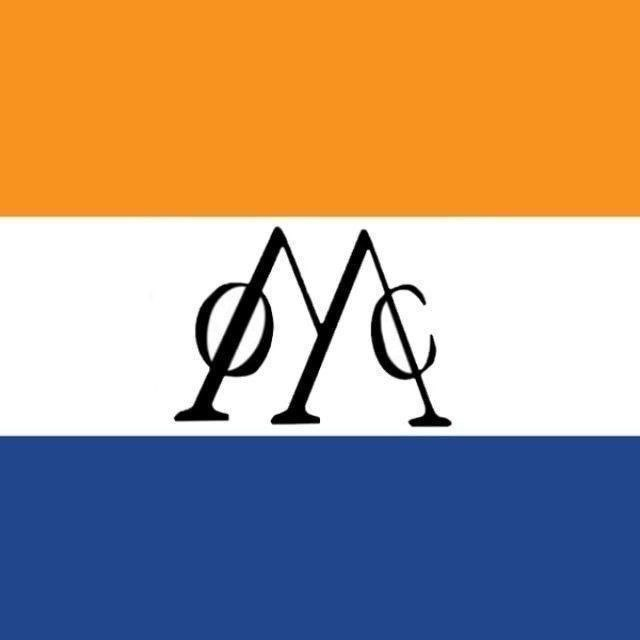
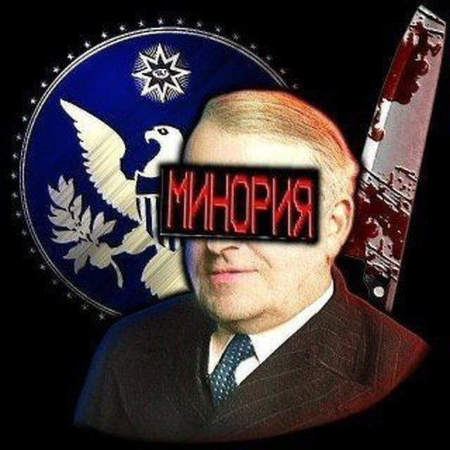

История
История Ост-Индии и её ответвлений

Основание и ранние дни
Чат "Ост-Индия" был создан 3 августа 2024 года Маратием, который стал его основателем и первым админом.
Изначально чат был просто местом для общения в телеге, но очень быстро перерос в нечто большее — в живое цифровое пространство со своими традициями, внутренними приколами и настоящей атмосферой.
Кровавый четверг
Один из самых жёстких моментов в истории Ост-Индии. Админ Тавас выступил против управления Маратия и публично потребовал «революции». Несколько часов в чате шёл открытый конфликт. Все участники были в шоке от происходящего. Это событие до сих пор вспоминают как «Кровавый четверг».
Чистка Еврея 31 декабря
В ночь на 31 декабря 2024 года, пока все админы были оффлайн, админ по имени Еврей провёл самую масштабную чистку в истории чата. Он выкинул из чата почти всех — около 200 человек, оставив только себя и модераторов.
Когда остальные админы вернулись, чат был пуст. Еврей назвал это "сюрпризом" и "давним планом". В итоге он был снят с прав, позже помилован, но в админы не вернулся.
Уход и возвращение Сотарка
23 сентября 2025 Сотарка банят в Ост Индии из-за того, что он помог Кайзеру сделать чистку. Он уходит в профессиональные хойщики, где становится президентом и получает 5 ранг. Спустя недолгое время Сотарку передают овнерку уже в Вест Индию. 6 января 2026 Маратий написал Сотарку с предложением мира и возвращения в чат. Через несколько дней переговоров Данило вернулся на правах заслуженного гражданина.
Администрация
Все, кто держал чат — по очереди или вместе. Без них Ост-Индия не была бы такой:
Маратий
Основатель чата, создал основу, спокойный стиль управления.
Иван Гойда @Ivan_Goida
Админ из той же волны выборов.
БЕЛЫЙ АВАТТ @baaltik
Друг Марата, его также называют Тавасом.
Devastator @MavteMorzo
Один из создателей мода на Ост-Индию. Выиграл на выборах на 4 ранг.
бочонок Бисмарка @Sotark300
Быстро реагирует на шлюхоботов, беспорядок в чате. Стал админом недавно.
Shel1done @Shel1done
Старичок чата, не всегда активен, но уважаемый (нет).
Kurtuko @OneKurtuko
Не доживет до 12, зеленая тля и просто хороший человек.
Hiomrat @Hiomrat
Админ, который также сидит в чате почти с его создания. Имеет 5 ранг.
Maydesk @Maydesk
Вайбкодер, админ 4 ранга, поставленный в компромиссе выборов "Спящих Бизнесменов"
Подвал @Kurkuma61
Админ из-за спящих бизнесменов
Сотарк @TheGreatTrialMarshal
Бывший главный админ чата и топ 1 по активу, после чистки Кайзера снят за содействие и ушёл в Проф. Хойщиков, из которых создал Вест Индию

Основание и ранние дни
Минория была создана раньше Ост-Индии - в марте 2024 года. Изначально активность была очень низкой, сообщений было мало. Позже чат стал ответвлением Ост-Индии, развивая собственную идентичность.
Чистка канала Минорным Помидором
Ключевое событие в истории Минории - чистка канала, проведенная Минорным Помидором. Из-за личных обид он удалил многих участников из канала. После этого долгое время сообщество восстанавливалось и набирало новых подписчиков.
Ватсап мемы
Второе ключевое событие - появление ватсап-мемов. Скорее всего, инициаторами были Майдеск или Кайзер, которые начали распространять мемы про WhatsApp. Сообщество подхватило эту тему, и мемы стали популярны.
Рупл создал стикерпак против Ватсапа, но он не получил широкой поддержки в сообществе.
Уход и возвращение Минора
Третье значимое событие - уход основателя Минора. Владельцем канала и чата стал Кайзер. Позже Минор вернулся под именем Маяковский, но он был просто админом, а не владельцем.
Конец Минории
Из-за агрессии Минории в сторону Ост-Индии и открытия в ней портала в ад ост-индийцы начали войну с Минорией. 8 января ночью Не Лама устроил чистку в Минории и удалил всех, кроме 17 ботов и 10 админов.
В один момент Шутерок не выдержал и сказал, что передаёт права владельца. Кандидатами были Еврей, Кайзер, Хиомрат. Единогласно победил Еврей. Сотарк, Хио и Кайзер смотрели в чате, как Еврей удаляет всех участников. А после удаления ВСЕХ УЧАСТНИКОВ, Еврей удалил саму Минорию.
Раннее время
Чат был создан 14 апреля 2025 года, и до конца августа в нём был низкий актив. В конце августа-сентября в чат массово переходили Ост-Индийцы и сделали этот чат ответвлением.
Передача владельца Сотарку
С каждым днём олды чата вместе с ними и Окт активили всё меньше, и в итоге ушли в свой чат или ассимилировались и стали Ост-Индийцами. Окт решил уйти с поста владельца и перестать управлять чатом, и получил 5 ранг за заслуги в развитии чата.
Чат Джона
В начале января 2026 чат Джона Смита стал не просто чатом к его каналу, а важным и популярным местом в ост-индийском комьюнити. Он был доступен только небольшому числу людей и фактически стал заменой чату мода на Минорию. В нём зарождались все популярные на тот момент мемы и дискуссии.
Администрация Вест-Индии
Ниже представлены администраторы высокого ранга и их коллеги.
Сотарк @TheGreatTrialMarshal
Владелец чата, привёл в чат ост индийцев.
Окт @OkTirrrs
Предыдущий владелец чата, один из олдов.
Бочонок Бисмарка @Bochonokbismarka
Победил на выборах, делает мемы с сотарком.
Джон Смит @SomeOrdinaryJohn
Админ после победы на выборах, уважаемый человек.
Кайзер
Админ за особые заслуги, сделал чистку в ост индии.
Подвал @Kurkuma61
Стал админом, потому что мечтал об этом с детства.
Амир Камаров @Aloearner
Культурный, умный и уважаемый человек, легенда чатов.
Еврей @syclefot
Герой чистки 31 декабря, такая же легенда чатов.
Не Лама @Nolamach
Сделал чистку в Минории, герой СВО в Ла Короне.
Maydesk
Стал админом на выборах в конце 2025 года.
Основание и Революция против Блеквуда
Чат был основан 12 августа 2025 года как политическая партия чата Блеквуда и оставался мёртв до начала революции. 30 августа Егор начал восстание против чата Блеквуда, а затем вёл войну против него. Чат Блеквуда окончательно погиб, а Ля Корона продолжала расширяться.
Восстания Махновца
Из-за личной неприязни Махновца к Егору он создавал многочисленные чаты, куда переманивал участников из Ля Короны и заставлял их быть активными. Также он платил деньги за снос и докс Егора.
Трудные времена
Из-за провалов Егора во внешней и внутренней политике, повлекших волнения среди участников и администраторов, некоторые админы перешли на сторону Вест-Индии, а некоторые добровольно покинули свои должности. Оставшиеся предлагали Егору передать овнера чата другому человеку. Егор отказался, но назначил Рика маршалом и дал ему независимость в действиях как компромисс.
История Ост/Вест-Индийских отношений с Ля Короной
Первые контакты случились ещё в сентябре 2025 года, во время отсоединения Ля Короны от Технократических хойщиков. Сотарк оказывал поддержку Егору и вместе с ним уничтожал чат Блеквуда.
28 ноября 2025 года около 20 ост-индийцев зашли в чат и начали общаться с местными. Владелец чата и администрация очень негативно отнеслись к приходу «мигрантов» и массово выдавали пожизненные муты, баны. После чего был заключён мир, и первое СВО прекратилось.
В январе 2025 года Сотарк хотел создать «Антимаратий коалицию» из разных чатов и каналов, основой которой должен был стать союз Вест-Индии и Ля Короны. Но переговоры о основном союзе забуксовали, и коалиция так и не появилась.
В феврале 2026 года, во время атаки Римского и Патрона на Ля Корону с накруткой ботов, доксом участников, чистки на 100 человек, Сотарк изначально поддержал Патрона и помогал ему, хотя выступал против Римского. В ходе нового мира с Ля Короной Сотарк забанил команду Патрона у себя в чате и осудил его действия.
Ночью с 5 по 6 марта 2026 года Сотарк и Лама, получившие 4-й ранг, забанили более 300 человек и удалили все сообщения до октября. Многие админы Ля Короны ушли в Вест-Индию и вели подрывную деятельность.
После этого всем вест-индийцам приходили бомберы. Егор угрожал создать канал со сливом личных данных всех, кто находится в чате, и связался с Арахментом, который регулярно накручивал ботов в чат и канал.
17 марта 2026 года, примерно в 23:00, Сотарк получает 4-й ранг снова и удаляет ещё 150 членов чата Ля Корона, но никакой реакции от владельца чата не последовало.
Администрация Ля Короны
Администраторы, которые управляли и управляют чатом Ля Корона:
Солевая Шишка @k_ai_s_e_r
Дипломат чата.
Датчан @DATSHANIASILOUUU
Олд и активный участник.
Скала @skeletonmonarh
Следит за порядком.
Бочонок Бисмарка @Sotark300
Ост-индиец, генератор событий.
Котовенко @DP228DP
Герой революции против блеквуда
Менчик @mechik_cat
Друг Егора
Егор @GENERAL_EGORIK
Основатель чата.
Файлы Егора
Компьютер с сборником скриншотов, видео, фото и прочего про владельца и создателя Ля Короны.
ЗапуститьЭволюция сообществ
Минория уничтожена. Ост-Индия переживает период очень низкой активности. Вест-Индия стагнирует. Ля Корона сейчас удалена (по слухам), либо в периоде низкой активности. Будущее уже трёх чатов неизвестно.